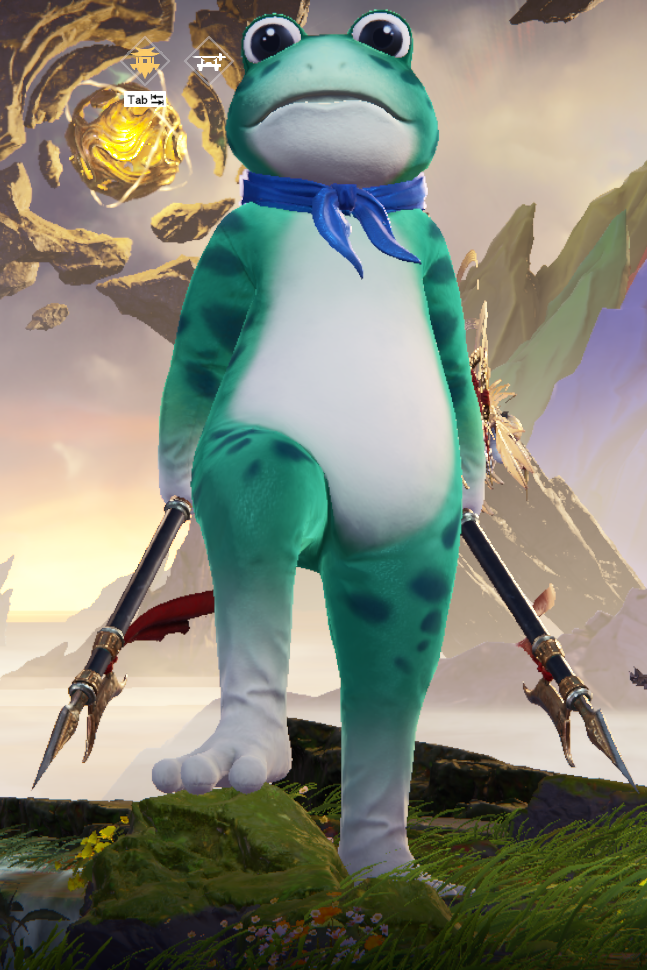

ลมลิ่วล่องและลอยสุดไกล พัดใจปลิวไปตามเม็ดทราย แม้ว่ารักเท่าไหร่ตอนสุดท้าย ก็สายเกินใจจะรั้ง แต่ทุกครั้งที่ได้กอดเธอ
เหมือนว่าใจยังมีความหวัง แม้พยายามสุดกำลัง แต่กลับยิ่งนับถอยหลังลงไป
อยากบอกเธอว่ารักจนสุดใจ ไม่เคยมีวันไหนที่อยากห่าง แม้ว่าใจจะฝืนเท่าไรแต่ฉันไม่เคยอยาก
จะปล่อยเธอไป ไม่ว่ายังไง รักมากแค่ไหนก็ไม่มีวันได้อยู่ ข้างกายเธอแม้ฉันอยากเคียงชิดคู่ แต่ก็รู้คงไม่ได้อยู่ตลอดไป
เอ่ยคำว่าลา ปลอบพาดวงใจ เจ็บปวดแค่ไหนก็ต้องข่มใจให้หาย รักฉันเป็นดั่งนาฬิกาทราย ทุ่มเทเท่าไรก็คงสลายไป
เจ็บแค่ไหนไม่เคยรักษา กลับมายืนที่เดิมทุกครา วันนี้นาฬิกาทรายหมดเวลา ถึงคราต้องไป
อยากบอกเธอว่ารักจนสุดใจ ไม่เคยมีวันไหนที่อยากห่าง แต่เพราะใจเรามีแผล แม้เวลาผ่านไป แต่ฉันไม่เคยผ่าน
จะปล่อยเธอไป ไม่ว่ายังไง รักมากแค่ไหนก็ไม่มีวันได้อยู่ ข้างกายเธอแม้ฉันอยากเคียงชิดคู่ แต่ก็รู้คงไม่ได้อยู่ตลอดไป
เอ่ยคำว่าลา ปลอบพาดวงใจ เจ็บปวดแค่ไหนก็ต้องข่มใจให้หาย รักฉันเป็นดั่งนาฬิกาทราย ทุ่มเทเท่าไรก็คงสลายไป
ลมลอยล่องล้าแล้วละลิ่ว ใจฉันปลิวไปเพียงไสว ไม่เคยไปไหน
เจ็บแค่ไหนก็พาตัวเองกลับมายืนที่เดิม ทุกวันคอยเริ่มนับใหม่ทุกครา (เธอไม่เคยรักษา) แต่วันนี้หมดเวลา หมดเรี่ยวแรง สุดกำลังจะไขว่คว้า เกินจะรั้งเอาไว้
จะปล่อยเธอไป ไม่ว่ายังไง รักมากแค่ไหนก็ไม่มีวันได้อยู่ (รักเธอมากแค่ไหน) ข้างกายเธอแม้ฉันอยากเคียงชิดคู่ แต่ก็รู้คงไม่ได้อยู่ตลอดไป (I'm not yours forever)
เอ่ยคำว่าลา ปลอบพาดวงใจ เจ็บปวดแค่ไหนก็ต้องข่มใจให้หาย (จะข่มใจให้หาย) รักฉันเป็นดั่งนาฬิกาทราย ทุ่มเทเท่าไรก็คงสลายไป
รักเราเป็นดั่งนาฬิกาทราย สักวันรักเราก็คงจะหายไป